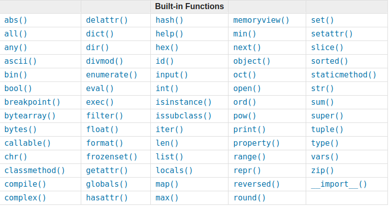
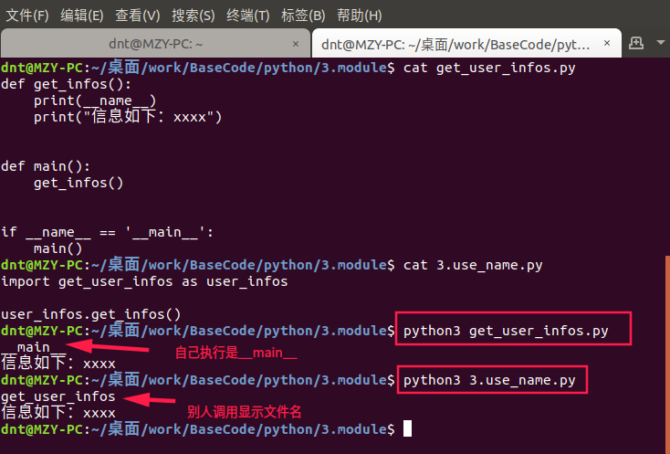
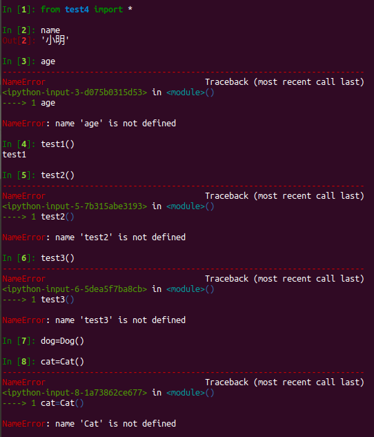
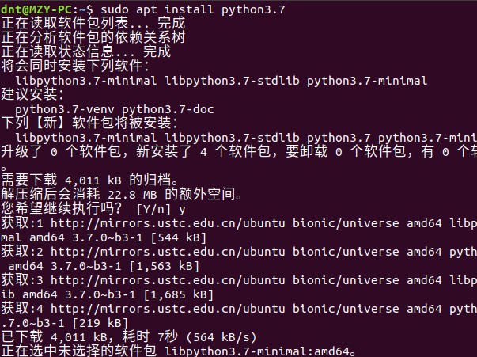
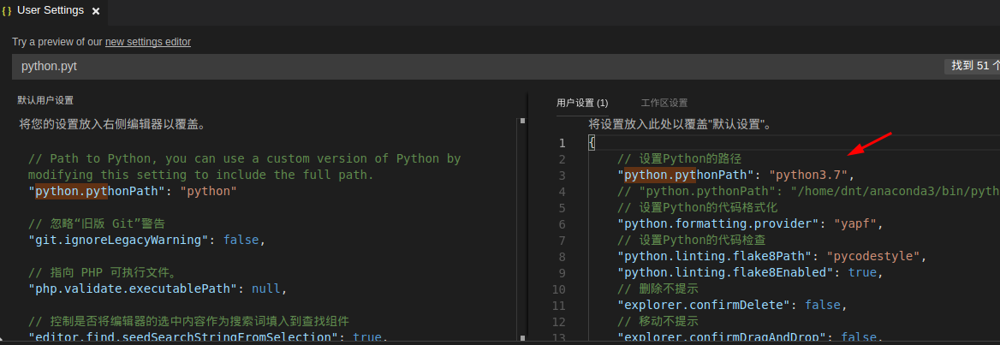
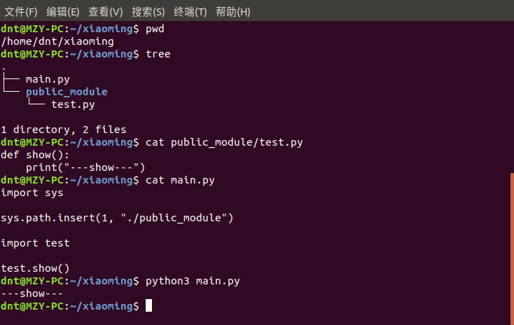
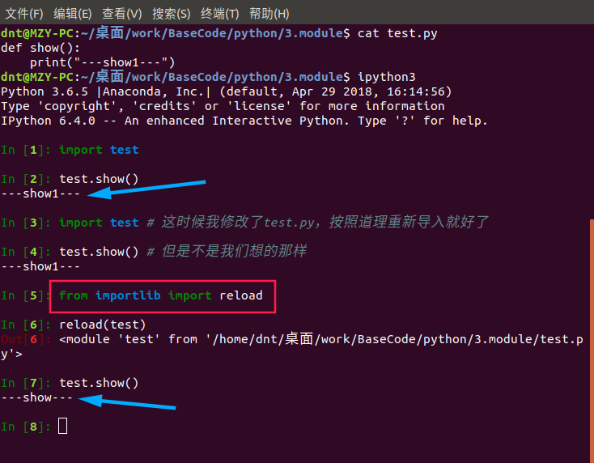
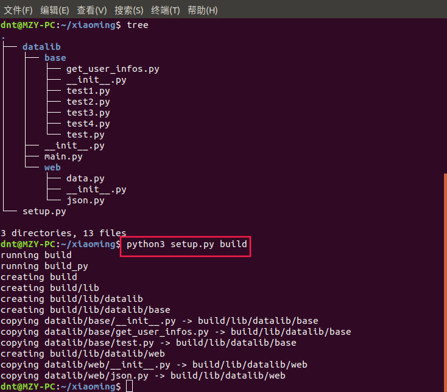

代码裤子： https://github.com/lotapp/BaseCode/tree/master
在线编程： https://mybinder.org/v2/gh/lotapp/BaseCode/master
在线预览： http://github.lesschina.com/python/base/module/模块专题.html
老师休假度蜜月去了，这学期也到了尾声，小明同学觉得自己学的挺好的，在四处逛游的过程中看见了小潘的电脑，然后惊到了！
# 导入matplotlib的pyplot模块
import matplotlib.pyplot as plt
x_list=list(range(1,11))
y_list=[y*2+1 for y in x_list]
print(x_list)
print(y_list)
# 画图
plt.plot(x_list,y_list)
# 设置X，Y的坐标区间（可以不设置，用默认显示方式）
plt.axis([0,10,0,25])
# 显示图片
plt.show()
小潘昨晚螃蟹吃多了，今天拉肚子拉的不要不要的，现在去药店买紫苏和干姜来解蟹毒呢
怎么办呢，感觉自己不再萌萌哒了，好心情瞬间被比下去了，小明内心不断思索中....
作为一个吃胖了的小明，过了一分钟就调节好了，然后好好看小潘的Code
咦，第一句是啥？不管，继续看
x_list=list(range(1,11))
y_list=[y*2+1 for y in x_list]
这不是之前老师讲的 列表生成式吗？然后就是画图了，好像也不是很难，开头到底是个啥，有了这个就可以几句话实现牛逼哄哄的技能了，不行得买瓶饮料问问课代表伟哥～
一进伟哥宿舍就发现，伟哥在给舍友们补课？这是要讲课的节奏吗？赶紧凑过来学习～
模块就是一组功能的集合体，我们的程序可以导入模块来复用模块里的功能
在Python中，一个py文件就称之为一个 模块（Module）
我们先来讲讲
模块怎么导入，上学期我们学了点C，发现每个文件开头都有一个
#include <stdio.h>
这个就类似我们说的模块导入了，咱们Python的模块导入和Java有点像用
import 来导入
先看个例子 ～ 我们定义了一个test.py文件，里面定义了这么一个函数：
# %load test.py
def show():
print("---show---")
我们想在新的py文件中使用这个函数
import test 把这个文件直接导入进来了
import test
test.show()
执行结果：
---show---有时候我们只需要用到模块中的某个函数，只需要引入该函数即可
from test import show 把这个文件的show方法导入进来，调用的时候直接
show()即可
from test import show
show()
执行结果：
---show---使用模块有什么好处？
提高了代码的维护性，当一个模块编写完毕，就可以被其他地方引用。
使用模块还可以 避免函数名和变量名冲突。相同名字的函数和变量完全可以分别存在不同的模块中
我们自己在编写模块时，不必考虑名字会与其他模块冲突(不要和 内置函数名字冲突)

看着小明一愣一愣的，加上那瓶菊花茶的面子，课代表来了一个demo：
test1.py
test_str = "111"
def show():
print(__name__, "show")
test2.py
test_str = "222"
def show():
print(__name__, "show")
可以以
,分隔（
这种导入方式，官方推荐多行导入）
import test1, test2
print(test1.test_str)
print(test2.test_str)
test1.show()
test2.show()
结果：
111
222
test1 show
test2 show还可以用这种方式，该模块里面的函数名、变量名以逗号分隔（不用多行）
通过这种方式引入的时候，是当两个模块中含有相同名称函数的时候，后面一次引入会覆盖前一次引入，所以用
as来避免一下
from test1 import show as show1, test_str as test_str1
from test2 import show as show2, test_str as test_str2
print(test_str1)
print(test_str2)
show1()
show2()
结果：
111
222
test1 show
test2 show如果想引入模块中所有东西可以用
from 模块名 import *
，这样所有
被允许(过会讲)的变量和函数都被导入进来了(
少用)
from 模块名 import 好处：使用起来方便了，坏处：容易与当前执行文件中的名字冲突
小明恍然大悟，盯着
__name__看了好久，然后结合前面的知识，乘着旁边位置电脑没人，写了一半的demo卡壳了：
get_infos.py
def get_infos():
print("信息如下：xxxx")
def main():
get_infos()
if __name__ == '__main__':
main()
伟哥过来瞟了一眼继续讲到：
之前老师讲面向对象的时候有提到标准格式写法：
def main():
get_infos()
if __name__ == '__main__':
main()
python文件可以有两种用途：
那怎么区分呢？就要用到
__name__了
我们来看个案例就懂了：
get_user_infos.py
def get_infos():
print(__name__)
print("信息如下：xxxx")
def main():
get_infos()
if __name__ == '__main__':
main()
再定义一个函数来调用它
import get_user_infos as user_infos
user_infos.get_infos()
直接执行的时候
__name__等于
__main__，别人调用的时候显示该文件名

这样的好处就是==> 避免被别人导入的时候执行某些Code
小明乐坏了，平时和小潘以前做项目老被吐槽，学了这个得好好嘲讽一下小潘了
以后再也不怕直接py文件各种问题了，咱们可以先简单自测一下O(∩_∩)O哈！
在一个模块中，我们可能会定义很多函数和变量，但有的函数和变量我们希望给别人使用，有的函数和变量我们希望仅仅在模块内部使用。在Python中，是通过
_前缀来实现的
小明同学基础功底扎实，看见标题小明就乐了，前面看了这么多案例瞬间秒懂，大叫道～”等一下～～～我来写demo，要是不行请你们吃晚饭～“
写下了如下代码：
test3.py
def test1():
print("test1")
def _test2():
print("test2")
def __test3():
print("test3")
调用代码：
import test3
test3.test1()
test3._test2()
test3.__test3()
结果：
test1
test2
test3大家大眼瞪小眼的看着小明，嘴角边露出了阴谋的味道～
这下小明傻眼了，难道老师之前类的私有系列讲错了？
小平瞥了小明一眼说道，你自己的打开方式不对还怪老师咯？看我给你改改~
调用代码：
from test3 import *
test1()
_test2()
__test3()
小明运行后就傻眼了，心想到，课代表这个宿舍卧虎藏龙啊，下次少来点，不然这点老底就被他们吃空了
NameError: name '_test2' is not defined
注释掉
_test2()运行结果：
NameError: name '__test3' is not defined
小明有点尴尬，然后转了个话题，说道：”那import不是无敌了？我们的私有不给力啊？“
伟哥语重心长的说道：
类似
_xxx和
__xxx这样的函数或变量就是非公开的（private），不应该被直接引用
之所以我们说，“不应该”被直接引用，而不是“不能”被直接引用，是因为Python并没有一种方法可以完全限制访问private函数或变量
比如小明的那种方式就可以直接使用了，但是从编程习惯上不应该引用private函数或变量。
我们平时使用的时候：
外部不需要引用的函数全部定义成private，只有外部需要引用的函数才定义为public,然后导入的时候尽量使用
from ... import
来个案例即可：
test4.py
__all__ = ["Dog", "test1", "name"]
class Animal(object):
pass
class Dog(Animal):
pass
class Cat(Animal):
pass
def test1():
print("test1")
def test2():
print("test2")
def test3():
print("test3")
name = "小明"
age = "22"
效果：只有
__all__列表里面的才能被访问

小明，看到使用的电脑出现了这么多的pyc文件，以为中毒了，慌了慌了，连忙问道："伟哥伟哥，这个pyc是啥啊？不会是病毒吧？"
├── 1.def_module.py
├── 2.use_module.py
├── 3.use_name.py
├── 4.use_module.py
├── 5.use_all_.py
├── get_user_infos.py
├── __pycache__
│ ├── get_user_infos.cpython-36.pyc
│ ├── test1.cpython-36.pyc
│ ├── test2.cpython-36.pyc
│ ├── test3.cpython-36.pyc
│ ├── test4.cpython-36.pyc
│ └── test.cpython-36.pyc
├── test1.py
├── test2.py
├── test3.py
├── test4.py
└── test.py旁边小李嘲笑道～”这你都不知道“
为了 提高加载模块的速度，python解释器会在 pycache目录中下缓存每个模块编译后的版本
格式为：
模块名.Python版本号.pyc
这种命名规范保证了编译后的结果多版本共存
小明问道，那我更新文件它怎么办呢？
小李瞥了一眼说道：
Python检查源文件的修改时间与编译的版本进行对比，如果过期就自动重新编译
并且编译的模块是平台独立的，所以相同的库可以在不同的架构的系统之间共享
小明恍然大悟，说道：
这不类似于Java和Net嘛，将来咋们编写的东西都可以跨平台了啊，O(∩_∩)O~，反正是由python虚拟机来执行的，太方便了
PS：pyc文件是可以反编译的，因而它的出现仅仅是用来提升模块的加载速度的，不是用来加密的
小明乘着大家休息的时候回宿舍拿了个笔记本，继续听道：
当你导入一个模块，Python解析器对模块位置的搜索顺序是：
sys.path变量中。变量里包含当前目录，PYTHONPATH和由安装过程决定的默认目录
总之你看
sys.path就对了
前几天时间发布了Python3.7，我们设置vscode的运行环境为Python3.7，然后看看： 
我用的是conda的一个路径,Python3.7相关的一下插件没那么完善，我用的是3.6系列，
3.7你可以用来练习一下
新语法糖

['', # 当前目录
'/usr/lib/python37.zip', '/usr/lib/python3.7',
'/usr/lib/python3.7/lib-dynload',
'/usr/local/lib/python3.7/dist-packages',
'/usr/lib/python3/dist-packages']小明心想，我是省事直接装了个conda路径是啥呢？于是自己测试了下：
# conda的默认搜索路径
import sys
print(sys.path)
运维方面用些许，平时用的不是很多，一带而过~
细心可以看到，sys.path是一个列表，那么你对其添加删除操作也是和list一样的
比如这个场景，服务器给不同的用户使用，又不想他们的程序访问到超过其文件夹外的文件（系统、其他用户）
那么可以弄一个公共的库文件夹（手段先不用管），用程序模拟一下 
这种方法是在运行时修改，运行结束后失效
其实还可以设置环境变量
pythonpath，该环境变量的内容会被自动添加到模块搜索路径中。设置方式与设置Path环境变量类似。
注意只需要添加你自己的搜索路径，Python自己本身的搜索路径不受影响。（列表第二个就是说的这个）
import语句是可以在程序中的任意位置使用的,且针对同一个模块很import多次
为了防止你重复导入，python的优化手段是：
第一次导入后就将模块名加载到内存了，后续的import语句仅是对已经加载到内存中的模块对象增加了一次引用，不会重新执行模块内的语句
看个例子： 
想要重新导入修改的模块，可以使用官方推荐的方法：
importlib下面的
reload方法
from importlib import reload
reload(test)
当然了你也可以使用
imp下面的
reload方法（
3.4往后，官方就不推荐使用 **imp** 了）
稍微提一下循环导入（类似于C#循环引用），能避免就避免。
子模块相对独立，尽量别相互导入，通过父模块来调用 (有点像微服务的感觉)
这样不会混乱也不会出现循环导入的问题了
如果项目里面真的出现了循环导入，那么可以这么解决（参考）：
看到标题小明就乐了，这不～终于可以说话了，不用被他们压抑的不敢出声了～
之前说了很多，比如
time,
random,
sys等等，这次再扩充几个用的比较多的模块
后面demo里面还会再说，可以自己学习一下（ 官方文档）（ 源码文件）
在Python中，通常有这几种方式来表示时间：
由于Python的 time模块实现主要调用C库，所以各个平台可能有所不同
type(time.time()) ==>
float
time()，
clock()(这个Win和Xinux系列有些区别)等看到表格不用怀疑，没错，更详细可以看 官方介绍
| 索引 | 属性 | 值 |
| ---- | -------------------------| ------------------------- |
| 0 | tm_year（年） | eg:2018 |
| 1 | tm_mon（月） | range [1, 12] |
| 2 | tm_mday（日） | range [1, 31] |
| 3 | tm_hour（时） | range [0, 23] |
| 4 | tm_min（分） | range [0, 59] |
| 5 | tm_sec（秒） | range [0, 61] |
| 6 | tm_wday（星期几） | range [0, 6]（0表示周日） |
| 7 | tm_yday（一年中的第几天） | range [1, 366] |
| 8 | tm_isdst（是否是夏令时） | 0, 1 or -1 |
datetime模块
datetime.datetime.now().strftime("%Y-%m-%d %X")
主要是时间相关的封装，案例在time模块的下面：
import time
# 时间戳，结果是float类型
print(time.time())
# 格式化的时间字符串：年-月-日 小时:分钟:秒
print(time.strftime("%Y-%m-%d %X"))
print(time.localtime()) # 本地时区的 struct_time
print(time.gmtime()) # UTC时区（世界标准时间）的struct_time
# time.mktime 将一个 struct_time 转化为时间戳
print(time.mktime(time.localtime()))
# t = time.localtime()
# print(time.asctime(t)) # 把一个表示时间的元组或者struct_time表示为这种形式：'Sun Jun 20 23:21:05 1993'
# print(time.asctime()) # 不写参数默认就是time.localtime()
import datetime
print(datetime.datetime.now()) # 当前时间 2018-07-03 13:02:20.824494
print(datetime.datetime.now().strftime("%Y-%m-%d %X")) # 当前时间 2018-07-03 13:02:20
# 时间加减
print(datetime.datetime.now() + datetime.timedelta(3)) # 当前时间+3天
print(datetime.datetime.now() + datetime.timedelta(-3)) # 当前时间-3天
print(datetime.datetime.now() + datetime.timedelta(hours=3)) # 当前时间+3小时
print(datetime.datetime.now() + datetime.timedelta(minutes=30)) # 当前时间+30分
random小明有好好研究，于是抢着讲解：
常用方法主要是这几个：
random.random()：大于0且小于1之间的小数
random.randint(1, 3)：[1,3] 大于等于1且小于等于3之间的整数
random.randrange(1, 3)：[1,3) 大于等于1且小于3之间的整数
random.choice([4, 'a', [1, 2]])：随机返回三者之一
random.uniform(1, 3)：大于1小于3的小数，如1.927109612082716
random.sample(old_list, 5)：从list中随机获取5个元素，作为一个片断返回
random.shuffle(old_list)：打乱list的顺序
下面来看看例子吧（最下面有个简单验证码的demo）:
import random
print(random.random()) # 大于0且小于1之间的小数
print(random.randint(1, 3)) # [1,3] 大于等于1且小于等于3之间的整数
print(random.randrange(1, 3)) # [1,3) 大于等于1且小于3之间的整数
print(random.choice([4, 'a', [1, 2]])) # 随机返回三者之一
print(random.uniform(1, 3)) # 大于1小于3的小数，如1.927109612082716
# 从list中随机获取N个元素，作为一个片断返回
old_list = [1, 2, 3, 4, 5, 6, 7, 8, 9, 10]
new_list = random.sample(old_list, 5) # 从list中随机获取5个元素，作为一个片断返回
print(old_list)
print(new_list) # 原有序列并没有改变
test_list = [1, 3, 5, 7, 9]
random.shuffle(test_list) # 打乱test_list的顺序
print(test_list)
# 简单验证码的例子
import random
def get_code(n):
"""简单验证码"""
code = ""
for i in range(n):
s1 = chr(random.randint(65, 90)) # 字母
s2 = str(random.randint(0, 9)) # 数字
code += random.choice([s1, s2]) # 随机返回s1 or s2
return code
def main():
print(get_code(4))
if __name__ == '__main__':
main()
一看到hashlib，小明就退缩了，只能继续听伟哥讲解：
官方文档： https://docs.python.org/3/library/hashlib.html
简单hash：
hashlib.sha256(pass_str.encode("utf-8")).hexdigest()
和key一起加密：
import hashlib
pass_str = "123456"
m = hashlib.sha256()
m.update(pass_str.encode("utf-8"))
m.update("你设置的key".encode("utf-8"))
pass_str_new = m.hexdigest()
扩展：python 还有一个
hmac模块，它内部对我们创建
key和
pass进行处理后再加密：
https://docs.python.org/3/library/hmac.html
import hashlib
pass_str = "123456"
# 简单hash一下
m = hashlib.sha256()
m.update(pass_str.encode("utf-8"))
pass_str_new = m.hexdigest()
print(pass_str_new)
print(len(pass_str_new))
# 简写：
hashlib.sha256(pass_str.encode("utf-8")).hexdigest()
# 简写这么方便为什么要像上面例子那么复杂呢？
# 直接加密的方式可以通过撞库破解，但你可以设置个key来加大难度
# 大部分网站都是用平台key + 用户key（可以是用户创建时间或者id之类的不变信息）来加密的
m = hashlib.sha256()
m.update(pass_str.encode("utf-8"))
m.update("你设置的key".encode("utf-8"))
pass_str_new = m.hexdigest()
print(pass_str_new)
print(len(pass_str_new))
常用模块里面还有很多，就不一一介绍了，比如：
functools里面的偏函数
partial
这个我们下次讲闭包相关知识会说的
functools.partial(函数名, 默认参数1，默认参数2...)
第三方模块安装之前有说过： https://www.cnblogs.com/dotnetcrazy/p/9095793.html
简单提一下：（ pip官网）
pip install 模块名 # 正常
sudo pip install 模块名 # 没权限运行
pip install --user 模块名 # conda下的pip
如果不想让包破坏自己的环境，可以使用：virtualenv，你可以作为扩展了解下（ 参考）
如果不同的人编写的模块名相同怎么办？
小明抢答曰：”为了避免模块名冲突，Python又引入了按目录来组织模块的方法，称为包（Package）“
小张斜了一眼小明补充道：”相互间有联系功能的模块可以放在一个包里，这个包就有点像C#的文件夹和类库的概念了“
小明不服气的把小潘那段代码的开头贴了出来：
import matplotlib.pyplot as plt，然后叫嚣道：”怎么样，这个肯定用到了包“
课代表看着这两个活宝，然后继续讲解道：
模块是一组Python代码的集合，可以使用其他模块，也可以被其他模块使用
比如一个模块的名称是
A.B， 那么他表示一个包
A中的子模块
B
刚说完，小明就得意的看着小张，然后继续听课：
创建自己的模块时，要注意：
下面我们来一个简单的案例：
自己定义一个包，目录结构如下：（
__init__.py是空文件）
web/
├── data.py
├── __init__.py
└── json.py调用web包里面的
get_json()方法：
from web.json import get_json
get_json()
或者：
import web.json as json
json.get_json()
每一个包目录下面都会有一个
__init__.py的文件，这个文件是必须存在的，否则Python就把这个目录当成普通目录
__init__.py可以是空文件，编译器默认会把它认成名字是文件夹名的
模块，eg:
web
还记得之前讲得
__all__吧，如果你想控制包里面的模块能否被访问使用，可以使用它
比如web包下的
init文件中写下这一句：
__all__ = ["json"]
神奇的事情发生了：
from web import *
json.get_json()
data.get_data()
在调用
data.get_data()的时候出现了如下错误：
NameError: name 'data' is not defined小明想到了自己当时的那顿饭，然后用当时的思路试了下：
# 你这样调就不行了
import web
web.data.get_data()
发现和上面一样的错误，然后夸张的说道～“哈哈哈，这种方式无敌了，里面有谁能调
data模块下的
get_data()方法我就请他喝饮料！”
话刚落完，发现大家刷刷的提交了相同的代码：
# 同样的，你硬是要调，python也拿你没办法
import web.data as data
data.get_data()
小明顿时崩溃了，自我安慰到：“反正都是要请你们吃晚饭的了，也不差这饮料了...”
把我们之前的Code做一个包，目录结构如下：
├── datalib
│ ├── base
│ │ ├── get_user_infos.py
│ │ ├── __init__.py
│ │ ├── test1.py
│ │ ├── test2.py
│ │ ├── test3.py
│ │ ├── test4.py
│ │ └── test.py
│ ├── __init__.py
│ ├── main.py
│ └── web
│ ├── data.py
│ ├── __init__.py
│ └── json.py
└── setup.py模块的目录结构中包含一个setup.py文件，用于定义模块名称、包含的模块等模块信息
固定格式如下：
setup(name="模块名称", version="版本", description="模块描述", author="模块作者", py_modules=[包含的模块内容])
以demo为例：
from distutils.core import setup
setup(
name="datalib",
version="1.0",
description="数据相关的模块",
author="小明",
py_modules=[
"datalib.base.get_user_infos", "datalib.base.test", "datalib.web.json"
])
build命令（构建模块）：
python setup.py sdist 来张图更形象：

build文件夹：
dnt@MZY-PC:~/xiaoming/build$ tree
.
└── lib
└── datalib
├── base
│ ├── get_user_infos.py
│ ├── __init__.py
│ └── test.py
└── web
├── __init__.py
└── json.py生成发布压缩包：
python3 setup.py sdist
他会帮你打包成一个
tar.gz的压缩包
其实你不构建，直接sdist也是可以的
dnt@MZY-PC:~/xiaoming$ tree
.
├── datalib
│ ├── base
│ │ ├── get_user_infos.py
│ │ ├── __init__.py
│ │ ├── test1.py
│ │ ├── test2.py
│ │ ├── test3.py
│ │ ├── test4.py
│ │ └── test.py
│ ├── __init__.py
│ ├── main.py
│ └── web
│ ├── data.py
│ ├── __init__.py
│ └── json.py
├── dist
│ └── datalib-1.0.tar.gz
├── MANIFEST
└── setup.py安装比较简单，如果是build文件夹，直接
sudo python setup.py install
如果是tar.gz，那么解压后再执行
sudo python setup.py install
当然了，也可以目录安装：
python setup.py install --prefix=路径
查看包内容：
tar -tvf datalib-1.0.tar.gz
解包：
tar -zxvf datalib-1.0.tar.gz
这些基础命令如果还不是很熟悉的话，可以看看逆天2015年写的 LinuxBase文档
其实说句心里话，2015开始摸索虚拟机中的Linux，几年提升肯定是有的，但是绝对没有这几个月的Linux真机开发来得快
逆天还是建议程序员尽快适应Linux环境开发，刚开始的确不方便，适应之后就感觉Win特别麻烦了...
很多东西一个指令就可以实现的，重复执行的东西写个脚本批量执行
当然了你Win下各种跑脚本也是一样的，但是别忘了～公司服务器基本上都是Linux的，该面对的总该来的，加油～
Old C#相关的知识可以参考： 如何在nuget上传自己的包
NetCore可以用打包命令：
dotnet-pack来打包成Nuget包，
官方文档说的很详细了，就不一一复述了
打包当前目录中的项目：
dotnet pack
打包 app1 项目：
dotnet pack ~/projects/app1/project.csproj
打包当前目录中的项目并将生成的包放置到 nupkgs 文件夹：
dotnet pack --output nupkgs
将当前目录中的项目打包到 nupkgs 文件夹并跳过生成步骤：
dotnet pack --no-build --output nupkgs
使用 PackageVersion MSBuild 属性将包版本设置为 2.1.0：
dotnet pack /p:PackageVersion=2.1.0
打包特定目标框架的项目：
dotnet pack /p:TargetFrameworks=net45
打包项目，并使用特定运行时 (Windows 10) 进行还原操作（.NET Core SDK 2.0 及更高版本）：
dotnet pack --runtime win10-x64
小明听完了这节课，感叹道～ “模块用起来真是爽啊”
然后问道：“为什么老师没讲呢？”
其他人一起鄙视小明说道：“你自己睡大觉你自己心里没有点逼数吗？”
小明大囧，感觉饮料和饭钱真是白花了。。。（完）